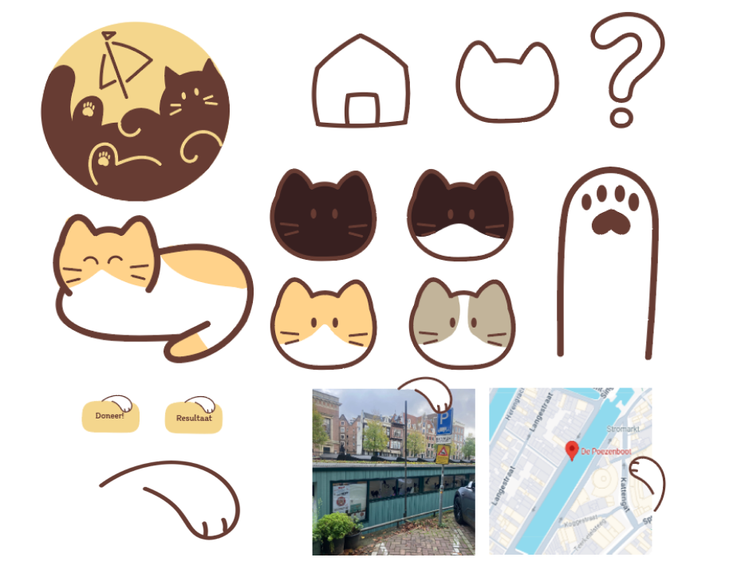

De Lieve, Groene Stad
De opdracht was om een mobiele website te maken voor een groen initiatief naar keuze. Ik had ervoor gekozen om een website te maken voor de Poezenboot in Amsterdam. Ik heb hiervoor zelf alle illustraties gemaakt, het logo ontworpen en de website gecodeerd in HTML en CSS.
Link naar de websiteHierna volgen nog enkele illustraties die ik heb gemaakt voor mijn website.
